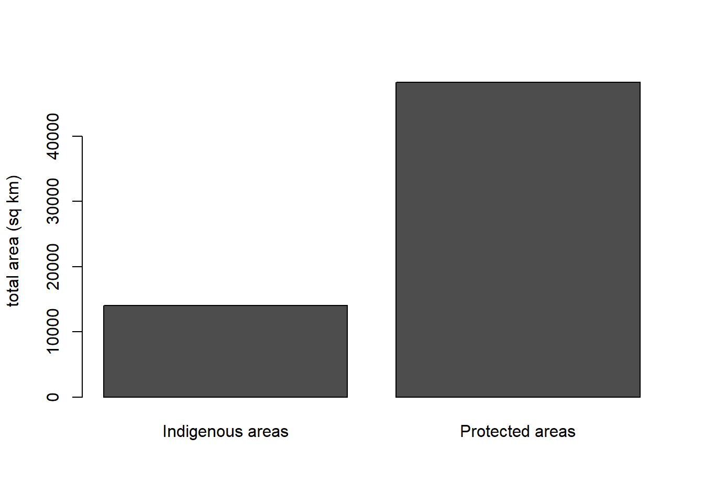
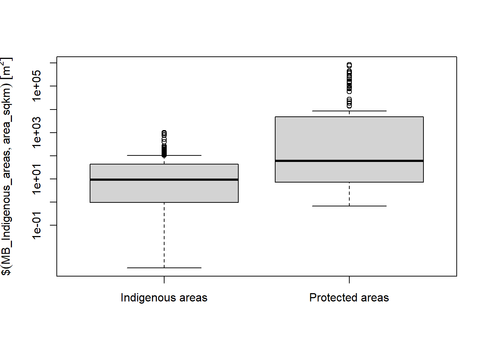

5 Area Analysis
Spatial analysis is much more than making maps, so in this chapter we will investigate how to harness the data underlying these maps to answer some questions.
Each shapefile has an associated attribute database file. You can see what the data look like by typing head(<datalayername>). This will give you the spatial reference data and the attribute data.
TRY IT!! Type head(MB_Parks) and note the spatial referencing and attribute data. One of the headers is 0_AREA, which gives the area of the park in hectares. The RMNP has area data stored in the AnalysisAr field.
We are going to calculate the total area of Manitoba that is set aside as protected, and compare this to the total area in Indigenous land. Then we will visualize these data with graphs.
First, we add up the park area and the area of RMNP (we will exclude the other national park, Wapusk).
total_park_area <- MB_RMNP$AnalysisAr + sum(MB_parks$O_AREA/100)Note we divide the area of the parks by 100 since it is reported in hectares and we want square kilometers.
The Indigenous land layer does not have an area field, so it has to be calculated based on the CRS (co-ordinate reference system) using the st_area function. Because the CRS is in UTMs, area will be in square metres. Thus we need to divide to get to areas in square km. Use the code below and note the use of the “pipes” (%>% symbol) which require the dplyr package (you can review the dplyr pacakge in the lab manual for BIOL 1002, available [here(https://ahurford.github.io/biol-1002/index.html)]).
## Installing package into 'C:/Users/ywiersma/Documents/R/win-library/4.1'
## (as 'lib' is unspecified)## Warning: unable to access index for repository http://cran.us.r-projct.org/src/contrib:
## cannot open URL 'http://cran.us.r-projct.org/src/contrib/PACKAGES'## Warning: package 'dplyr' is not available for this version of R
##
## A version of this package for your version of R might be available elsewhere,
## see the ideas at
## https://cran.r-project.org/doc/manuals/r-patched/R-admin.html#Installing-packages## Warning: unable to access index for repository http://cran.us.r-projct.org/bin/windows/contrib/4.1:
## cannot open URL 'http://cran.us.r-projct.org/bin/windows/contrib/4.1/PACKAGES'##
## Attaching package: 'dplyr'## The following objects are masked from 'package:stats':
##
## filter, lag## The following objects are masked from 'package:base':
##
## intersect, setdiff, setequal, unionMB_Indigenous_areas <- MB_IndigenousLands %>%
mutate(area_sqm = st_area(MB_IndigenousLands)) %>%
mutate(area_sqkm = area_sqm/1000000)Now calculate the sum of the MB_Indigenous areas and assign that to an object called total_Indigenous_area. Write your own line of code to do this (but you can look at how we summed the area of the parks for assistance)
In the previous chapter, we created a map showing parks and Indigenous areas. Now we will compare those data two other ways. Use the barchart function to write code to make a bar plot comparing the totals of each type of area, like the one shown below.

Then use the boxplot function to make a boxplot comparing the area data of the two (HINT note the log scale on the y-axis below)

TIP for help with barplots and boxplots, review Exercise 2 in the BIOL1001 lab, or in the console, tyep help(barplot) and help(boxplot)